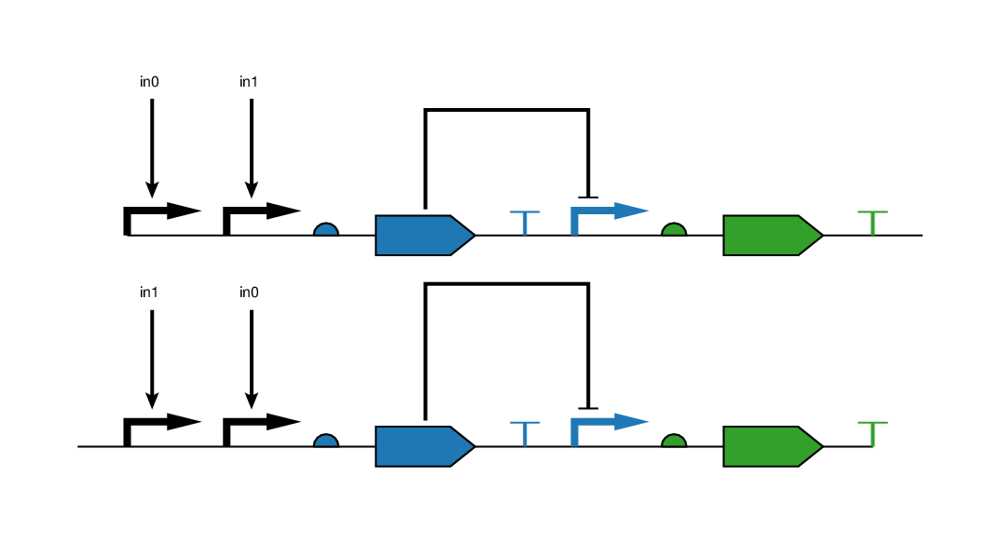
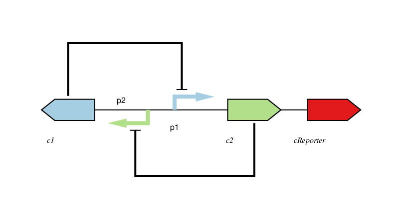
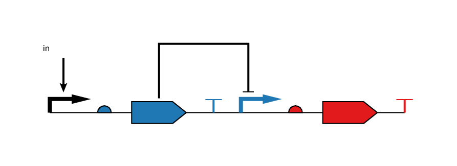

Comments
miniEugene supports line comments.
Example:
// This is a line comment
Rules
We categorize the rules into the following types of constraints: counting, positional, pairing. To formally define the semantics of the rules, we define N as the length/size of the genetic design.
Counting Rules
Counting rules constrain the number of occurrences of genetic elements in a design.
| Rule | Description | Examples |
|---|---|---|
| CONTAINS α | α must appear at least once |
CONTAINS p CONTAINS Terminator |
| α EXACTLY n | α must appear exactly n times | p EXACTLY 1 |
| α MORETHAN n | α must appear more than n times | c MORETHAN 1 |
| α NOTMORETHAN n | α must not appear more than n times | p NOTMORETHAN 1 |
Positional Rules
Positional rules constraint the location of occurrence of genetic elements.
| Rule | Description | Examples |
|---|---|---|
| STARTSWITH α | α must appear at the first position | STARTSWITH p |
| ENDSWITH α | α must appear at the last position | ENDSWITH t |
|
α AFTER β α ALL_AFTER β |
If α appears in the design, then all β components must precede all α components (BEFORE is equivalent to ALL_BEFORE) |
c AFTER r t ALL_AFTER p |
| α SOMEAFTER β | If α appears in the design, then at least one β component must precede at least one α component |
p SOME_AFTER t |
|
α BEFORE β α ALL_BEFORE β |
If α appears in the design, then all α components must precede all β components
(BEFORE is equivalent to ALL_BEFORE) |
r BEFORE c p ALL_BEFORE t |
| α SOME_BEFORE β | If α appears in the design, then at least one α component must precede at least one β component |
t SOME_BEFORE p |
α NEXTTO β α ALL_NEXTTO β |
If α appears in the design, then all β components must appear immediately before or after all α components (NEXTTO is equivalent to ALL_NEXTTO) |
r NEXTTO p r ALL_NEXTTO c |
| α SOME_NEXTTO β | If α appears in the design, then at least one β component must appear immediately before or after at least one α component |
p SOME_NEXTTO t |
Paring Rules
Pairing rules constrain the pair-wise occurrence of genetic elements.
Note! Eugene uses a zero-based indexing mechanism.
| Rule | Description | Examples |
|---|---|---|
| [i] EQUALS [j] | the element at i-th index must be equal to the element at the j-th index. |
[0] EQUALS [1] |
| [i] NOTEQUALS [j] | the element at i-th index must be different to the element at the j-th index. |
[0] NOTEQUALS [1] |
| α WITH β | α and β must appear together |
p WITH t r WITH c |
| α NOTWITH β | α and β must appear but not both |
t1 NOTWITH t2 |
| α THEN β | If α appears, then β must appear |
p THEN t |
Orientation Rules
Pairing rules constrain the orientation of genetic elements.
| Rule | Description | Examples |
|---|---|---|
FORWARD α ALL_FORWARD α |
all occurrences of α must have a forward orientation. (FORWARD is equivalent to ALL_FORWARD) |
FORWARD promoter |
REVERSE α ALL_REVERSE α |
all occurrences of α must have a reverse orientation
(REVERSE is equivalent to ALL_REVERSE) |
REVERSE promoter |
SOME_FORWARD α |
at least one occurrence of α must have a forward orientation |
SOME_FORWARD promoter |
SOME_REVERSE α |
at least one occurrence of α must have a reverse orientation |
SOME_REVERSE promoter |
ALL_FORWARD |
all elements in the design must have a forward orientation |
ALL_FORWARD |
ALL_REVERSE |
all elements in the design must have a reverse orientation |
ALL_REVERSE |
Interaction Rules
Interaction rules constrain regulatory interactions among genetic elements.
| Rule | Description | Examples |
|---|---|---|
α REPRESSES β |
The α element represses the β element. |
tetR REPRESSES pTet |
α INDUCES β |
The α element induces the β element. |
aTc INDUCES pBad |
α DRIVES β |
The α element drives the β element. |
pTet DRIVES GFP |
Examples (TBD)
Genetic NOR Gate
Eugene Rules
Genetic Toggle Switch
Eugene Rules
Genetic Inverter
Eugene Rules

This work is licensed under a Creative Commons Attribution 4.0 International License.